Requisitos
- Necessidades do cliente
O que é um requisito?
Quem pode coletar os requisito
- Engenheito de software
- Analista de sistemas
- Scrum master
- Product owner
- Outras pessoas envolvidas no projeto do software
Coleta de requisitos
- Histórias de usuário
- Etinografia (observação)
- Testes funcionais
Acoleta de requisotos é feita através de técnicas
Classificação dos requisitos
- descrevem o comportamento do sistema, suas ações para cada entrada, ou seja, é aquilo que descreve o que o sistema proporcionará em termos de funcionalidade.
Requisitos funcionais
- Em geral se relacionam com padrões de qualidade como confiabilidade, performance, robustez, etc. Ou seja, não são os requisitos que estarão visualmente disponíveis para o usuário;
Requisitos NÃO funcionais
Problema da análise de requisitos
- Stakeholders, em geral, não sabem exatamente o quequerem;
- Stakeholders expressam requisitos em sua terminologia;
- Stakeholders diferentes podem gerar requisitos conflitantes
- Stakeholders novos podem surgir e o ambiente de trabalho muda, os requisitos mudam ou podem ser insuficientes;
- Fatores políticos e organizacionais podem influenciar os requisitos do sistema;
- Requisitos mudam durante o processo de análise;
Resolução de Conflitos
- É normal que ocorram requisitos conflitantes por exemplo:
- (R = requisito) R-23: O sistema deve efetuar a baixa no sistema de estoque;
- R-45: O sistema não deve efetuar a baixa no sistema de estoque. Deve gerar base de dados que deve ser importada pelo sistema de estoque;
- Cliente/usuário deve ser consultado para resolver conflitos (ambiguidades);
Prioridade De Requisitos
-
Essenciais (Regras de Negócio);
-
Importantes (Compõem as regras de negócio);
-
Desejáveis (Auxiliam o usuário);
Alguns requisitos são mais urgentes que outros, É essencial determinar a prioridade dos requisitos junto ao cliente, Requisitos de maior prioridade são desenvolvidos em primeiro lugar.
Requisitos podem ser vistos em três classes distintas:
Em princípio, sistema deve resolver todos os requisitos de essenciais para desejáveis
Validação dos Requisitos
- Será que realmente entendi o que o cliente deseja?
- Devo me certificar de que não houve falha em nossa interação (comunicação);
- Há diversas técnicas de validação;
- À medida que o sistema é desenvolvido, os requisitos implementados são apresentados ao cliente/usuário;
- Custos com erros de requisitos são altos: Consertar um erro de requisitos após entrega do sistema pode custar mais de 100 vezes o custo de um erro de implementação
Gerenciamento de Requisitos
- O processo de coleta dos requisitos e Durante o desenvolvimento do sistema;
- Requisitos novos surgem durante o processo, de acordo com mudanças nas necessidades do negócio, e quando um entendimento melhor do sistema é obtido;
- Diferentes pontos de vista (ex.: Histórias de usuários) têm diferentes requisitos e esses geralmente são contraditórios;
Gerenciamento de requisitos é o processo de controlar as mudanças dos requisitos durante:
Requisitos são inevitavelmente incompletos e inconsistentes:

Tudo sobre Iso
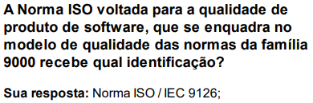
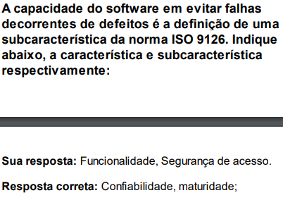
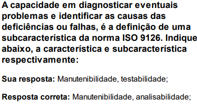
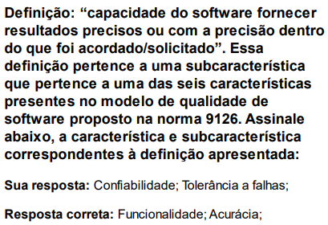
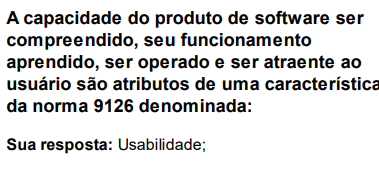
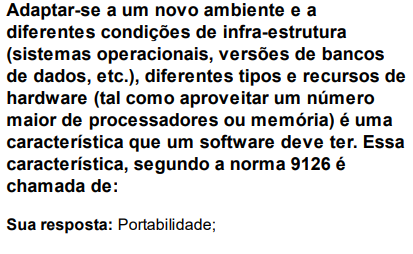
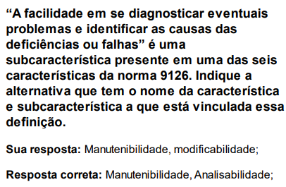
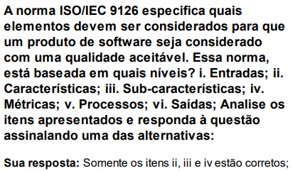
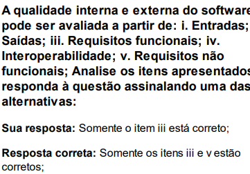
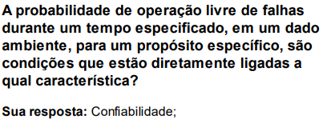
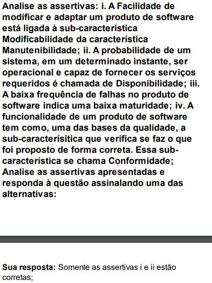
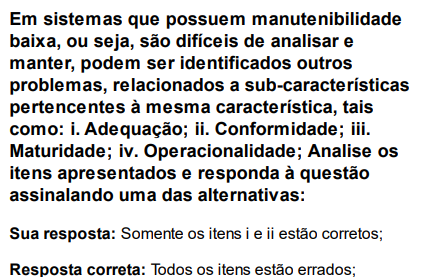
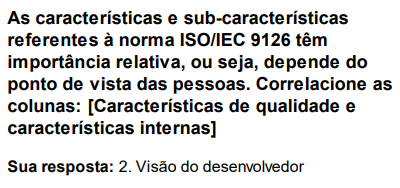
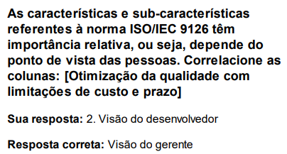
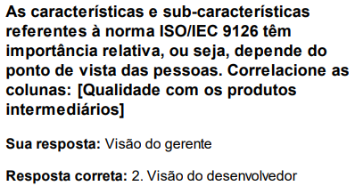
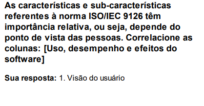
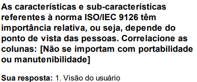
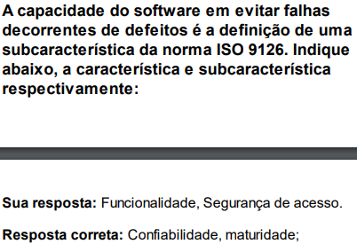
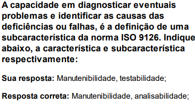
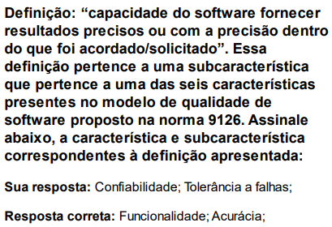
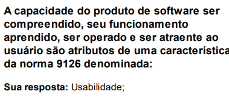
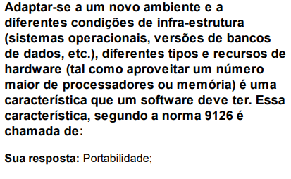
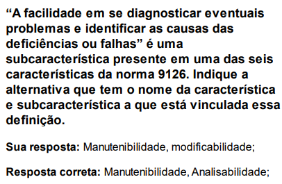
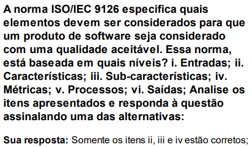
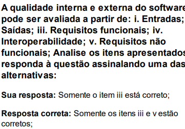
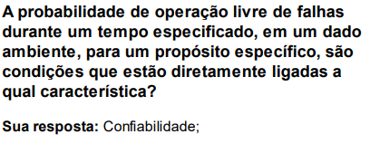
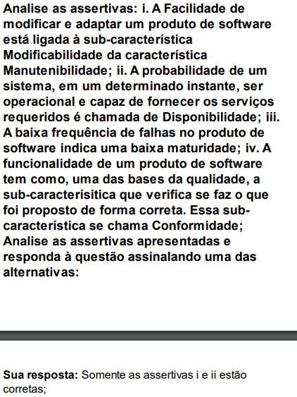
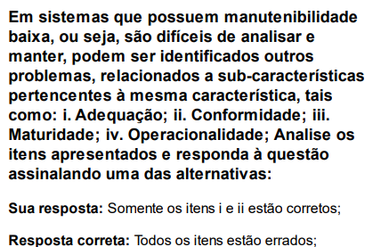
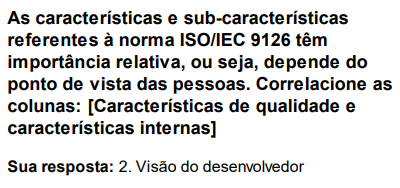
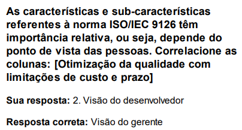
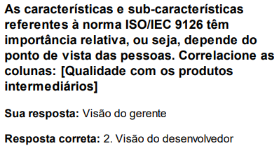
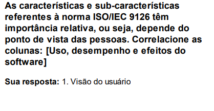
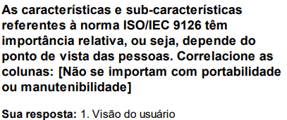